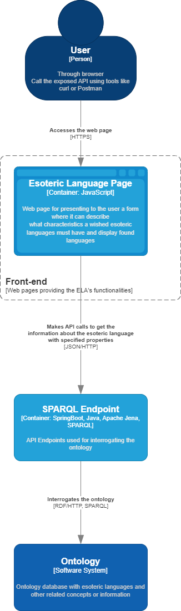
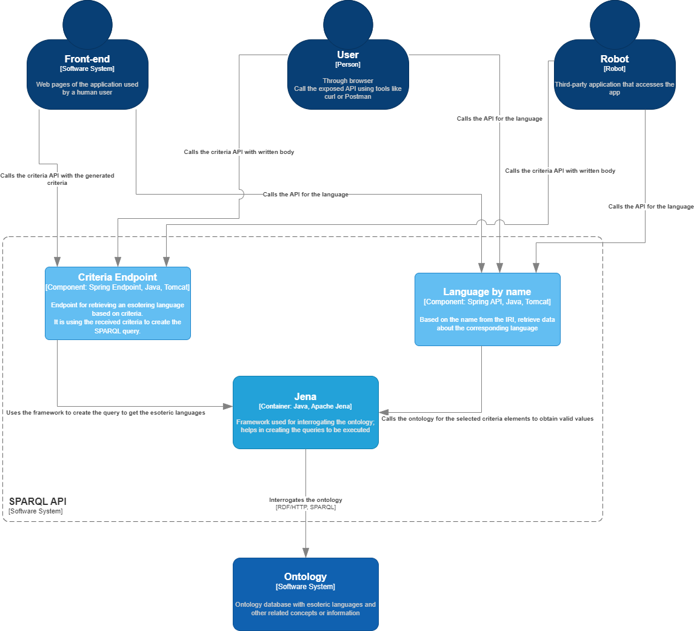

2 Projet Implementation
2.1 ELA-UI
The web pages will be implemented using HTML5, CSS and vanilla Javascripts.
The page will be divided in 2 section:
- The above section, designed for setting preferences for the languages.
- The below section, for displaying information about the languages.
- A summary about the language.
- All the details available for a language.
The requests called by the Javascript to the application server will be done using the Fetch API.
2.1.1 Criteria page
The page for getting a suggested esoteric language on criteria will have a static desgin. The criteria will be represented by fields in a form with predefined values. The user can select a value, meaning that they want the condition to be taken into account when retrieving languages, or not.
2.1.3 Handling responses
Once the response is received from the server, if the HTTP reponse code is success (200), then the page will render a new HTML element that will contain information about the retrieved esoteric languages.
There can also be the scenarion when the application cannot find an esoteric language and an HTTP error code (404) is returned. In this scenarion, the UI will render an empty HTML object.
A visual flow of the application where the UI intervine can be viewed in the following diagram:

The following image shows the layout of the page:
2.2 ELA-SPARQL
The ELA-SPARQL will represents the main endpoint used by the whole application. This endpoint will be public to the world, this means that it can also be accessed by other means than using the web pages.
2.2.1 Tools
The following technologies are going to be used in the development of the web application:
- Java - as the main programming language
- Springboot - as the framwork used in generating the template for the endpoint and further development
- Maven - as the tool to manage the dependencies of the project
- Apache Jena - as the framework for extracting information from the ontology
- Tomcat - as the web application server host
2.2.2 Description
The web application will provide two endpoints:
- Retrieve a set of summary about esoteric languages based on given criteria
- Retrieve a specific esoteric language
Note: By esoteric language, in the above list, it was referred to all linked information. To see what information is related to such a resource, see Ontology
2.2.2.1 Criteria language
This endpoint will receive an object will requested criteria to be processed. Using the selected criteria, the web application will build the SPARQL query using the Jena framework to execute it on the ontology. Here are 3 scenarios that must to be handled accordingly:
- The query returns at least one language: the return code is 200 and the list of the languages is returned with the number of found languages
- The query returns no language: the call returns the HTTP return code 404 - Not Found
- For any error encountered by the server: the call returns the HTTP return code 500 - Server Error
More tehnical details about the API can be consulted here: Get languages by criteria
2.2.2.2 Esoteric language by name
This API uses the GET method in order to return the required language. By using the REST approach, someone will need the name of the language in order to retrieve all the date.
The name of the language is extracted from the IRI, which is present in the body of the languages retrieved by the Criteria Endpoint API.
More tehnical details are presented here: Get languages by name
The return situations are similarly with Criteria Endpoint, with the exception that if no language is found, the criteria is re-generated and the query is executed again.
A visualisation of how the API's works together can be seen in the following image:

2.2.3 API Specification
At the following link it is presented the OpenAPI specification of the SPARQL endpoint: API documentation
2.3 ELA-Ontology
The ontology will be created as a base for the languages, their properties, and related concepts, such as compilers, editors, authors, program examples etc. These will be added as classes into the ontology with the aforementioned specific properties and relations.
Below is an example of an RDF graph for one of the esoteric languages:

2.3.1 Tools
To develop the ontology, the following tools were used:
-
Protégé - open source ontology editor and a knowledge management system from Standford
In this section are presented images from the ontology. The images represents a structure of the implemented classes and what languages were added to it.